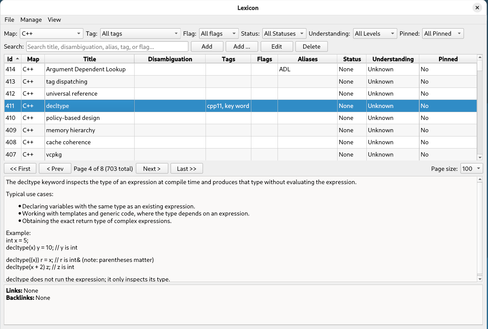

User Guide
Welcome! This guide takes you from installing Lexicon to running a well-organized, interlinked knowledge dictionary.
What is Lexicon?
Lexicon is a free, open-source desktop application for structured learning and technical note-taking. Instead of a folder full of loose notes, you build a personal dictionary of items, organized into groups, enriched with metadata, and connected by typed links that form a concept graph.
All data is stored locally in a single SQLite file — no account, no cloud, no telemetry. You own your knowledge.

Core concepts
Five ideas are enough to understand the whole application:
| Concept | What it is | Example |
|---|---|---|
| Group | A top-level bucket that groups related items. | C++, Databases, Networking |
| Item | A single concept with a title, Markdown content, and metadata. | Move semantics, B-tree index |
| Tag / Flag | Labels for classification (tags) and workflow markers (flags). | Tags: cpp20, templates · Flags: review, needs-example |
| Alias | An alternate name or synonym that also matches in search. | RAII for Resource Acquisition Is Initialization |
| Link | A typed relationship between two items (with automatic backlinks). | std::vector — Is A → container |
Quick start checklist
- Install and launch Lexicon. The database file is created automatically on first start.
- Organize your groups via
Manage → Groups.... ADefaultgroup is ready when you start. - Add a few items with the
Addbutton and fill in their titles. - Write content in Markdown in the Content tab and watch the live preview.
- Connect related items with typed links to grow your concept graph.
- Set up a backup habit — copying one file is all it takes.
Guide chapters
📦 Installation
Requirements, building on Debian/Ubuntu, Windows, and macOS, and what happens on first launch.
🚀 Getting started
Create groups, explore the main window, and add your first items the recommended way.
✍️ Editing items
The item editor in depth: General fields, the Markdown editor, and metadata management.
🔗 Links & relationships
Build a concept graph with typed links and backlinks — Is A, Part Of, Depends On, and more.
🔎 Search & navigation
Search, filters, sorting, pagination, global overviews, and switching between light and dark mode.
🛟 Backup & troubleshooting
Where your data lives, how to back it up, deletion safety rules, and fixes for common problems.